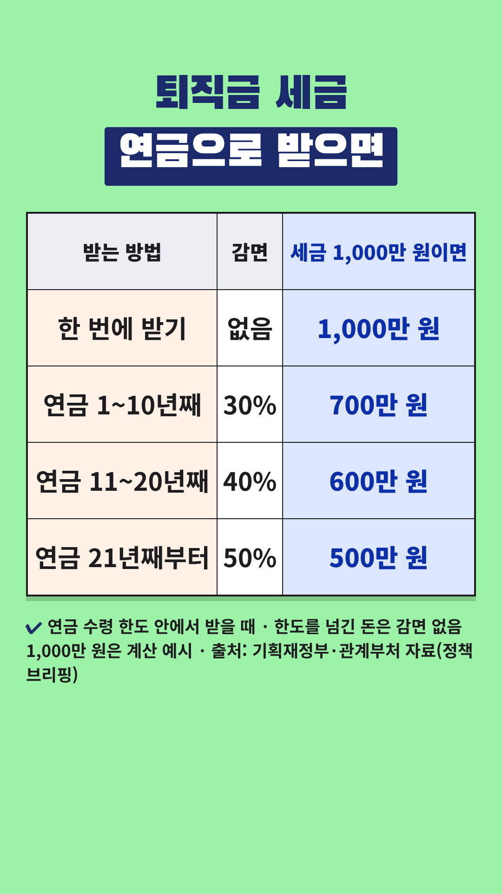

Vrew 작업 카드
2026-10-31-퇴직금-연금수령-절세 · 사실 검증과 업로드 전 점검을 통과한 회차입니다. 위에서부터 차례로 복사해 붙여넣으세요.
- 대본 붙여넣기 → AI 목소리(차분한 중년, 0.9~1.0배)
- 장면마다 AI 이미지 문구 복사 → 이미지 바꾸기
- 큰 글자가 있는 장면에 텍스트 추가
- 배경음악(오디오 보관함·Vrew 음원) → 내보내기 mp4
- 제목·설명란·고정댓글 복사해 업로드
0단계 · 첫 장면 강조 제목
Vrew 1번 장면 → 삽입 → 이미지 → 같은 폴더의 title-overlay.png(투명 배경) → 화면 전체 크기로 맨 위에 얹기. 1번 장면의 '큰 글자'는 이 이미지가 대신하므로 따로 넣지 않습니다. 아래 배경은 AI 이미지 자리 표시입니다.
0-1단계 · 숫자 카드 (표 이미지)

표시된 장면들을 하나로 이어 붙이거나 장면마다 → 이미지 바꾸기 → 같은 폴더의 number-N.png를 화면 전체 크기로 넣습니다. 이 장면들에는 AI 이미지와 큰 글자를 넣지 않습니다. 자막은 화면 맨 아래에 두어 표를 가리지 않게 합니다.
1단계 · 대본
1. 대본 붙여넣기
Vrew → 새로 만들기 → 텍스트로 비디오 만들기 → 쇼츠 9:16 → 대본 칸에 붙여넣기
퇴직금 세금, 30% 덜 내는 방법이 있어요. 퇴직금을 한 번에 받으면 퇴직소득세를 내죠. 그런데 개인형 퇴직연금, IRP로 옮기면 퇴직소득세 내는 때가 뒤로 미뤄져요. 55세 이후 연금으로 나눠 받으면 연금 수령 10년째까지는 30% 덜 내요. 11년째부터는 40%, 21년째부터는 50%를 덜 내요. 단, 꼭 알아 둘 점이 있어요. 연금 수령 한도가 정해져 있어요. 한도를 넘겨 한꺼번에 찾은 돈은 감면 없이 원래 퇴직소득세를 내요. 내 한도는 가입한 금융회사에서 확인하세요. 개인 상황에 따라 다르니 전문가와 상담하세요.
2~3단계 · 장면별 이미지와 큰 글자
장면 1
나레이션퇴직금 세금, 30% 덜 내는 방법이 있어요.
AI 이미지퇴직 기념 꽃다발을 들고 회사 건물 앞에 선 50대 후반 한국인 남성, 위쪽은 맑은 하늘과 흐린 배경, 따뜻한 자연광, 사실적인 사진 스타일, 세로 9:16 구도, 화면에 글자 없음
큰 글자퇴직금 세금
30% 덜 내는 법
장면 2
나레이션퇴직금을 한 번에 받으면 퇴직소득세를 내죠.
AI 이미지거실 탁자에서 흰 봉투와 서류를 살펴보는 60대 한국인 부부, 따뜻한 자연광, 사실적인 사진 스타일, 세로 9:16 구도, 화면에 글자 없음
장면 3
나레이션그런데 개인형 퇴직연금, IRP로 옮기면
AI 이미지은행 상담 창구에서 상담을 받는 50대 한국인 여성, 로고 없는 밝은 실내, 따뜻한 자연광, 사실적인 사진 스타일, 세로 9:16 구도, 화면에 글자 없음
큰 글자IRP 계좌로
장면 4
나레이션퇴직소득세 내는 때가 뒤로 미뤄져요.
AI 이미지벽걸이 달력 앞에서 다음 장을 넘기는 손, 숫자는 흐릿하게, 따뜻한 자연광, 사실적인 사진 스타일, 세로 9:16 구도, 화면에 글자 없음
장면 5
나레이션55세 이후 연금으로 나눠 받으면
숫자 카드number-1.png를 화면 전체로 (AI 이미지·큰 글자 대신)
장면 6
나레이션연금 수령 10년째까지는 30% 덜 내요.
숫자 카드number-1.png를 화면 전체로 (AI 이미지·큰 글자 대신)
장면 7
나레이션11년째부터는 40%,
숫자 카드number-1.png를 화면 전체로 (AI 이미지·큰 글자 대신)
장면 8
나레이션21년째부터는 50%를 덜 내요.
숫자 카드number-1.png를 화면 전체로 (AI 이미지·큰 글자 대신)
장면 9
나레이션단, 꼭 알아 둘 점이 있어요.
AI 이미지메모지를 가리키며 설명하는 손, 깔끔한 책상, 따뜻한 자연광, 사실적인 사진 스타일, 세로 9:16 구도, 화면에 글자 없음
장면 10
나레이션연금 수령 한도가 정해져 있어요.
AI 이미지유리 저금통과 동전, 단순한 배경, 따뜻한 자연광, 사실적인 사진 스타일, 세로 9:16 구도, 화면에 글자 없음
큰 글자연금 수령 한도
장면 11
나레이션한도를 넘겨 한꺼번에 찾은 돈은
AI 이미지탁자 위 지갑과 지폐, 손이 지폐를 꺼내는 모습, 따뜻한 자연광, 사실적인 사진 스타일, 세로 9:16 구도, 화면에 글자 없음
장면 12
나레이션감면 없이 원래 퇴직소득세를 내요.
AI 이미지계산기와 서류를 보며 고민하는 60대 한국인 남성, 따뜻한 자연광, 사실적인 사진 스타일, 세로 9:16 구도, 화면에 글자 없음
큰 글자감면 없이
장면 13
나레이션내 한도는 가입한 금융회사에서 확인하세요.
AI 이미지전화로 상담하며 메모하는 60대 한국인 여성, 밝은 거실, 따뜻한 자연광, 사실적인 사진 스타일, 세로 9:16 구도, 화면에 글자 없음
장면 14
나레이션개인 상황에 따라 다르니 전문가와 상담하세요.
AI 이미지상담 테이블에서 전문가와 이야기하는 60대 한국인 부부, 따뜻한 자연광, 사실적인 사진 스타일, 세로 9:16 구도, 화면에 글자 없음
5단계 · 업로드 정보
제목
퇴직금 세금 30% 덜 내는 법, IRP 연금으로 나눠 받기
설명란
[음원] 칸은 고른 배경음악으로 채운 뒤 올리세요.
퇴직금을 개인형 퇴직연금(IRP) 계좌로 옮기면 퇴직소득세를 내는 때가 뒤로 미뤄지고, 55세 이후 연금으로 나눠 받으면 퇴직소득세가 줄어요. 연금 수령 10년째까지는 일시금으로 받을 때 세금의 30%, 11년째부터는 40%, 21년째부터는 50%를 덜 내요. 다만 연금 수령 한도를 넘겨 한꺼번에 찾은 돈은 감면 없이 원래 퇴직소득세를 내요. 내 한도는 가입한 금융회사에서 확인하세요. [용어 풀이] - 개인형 퇴직연금(IRP): 퇴직금을 옮겨 두고 굴리다가 나중에 연금으로 받을 수 있는 퇴직연금 계좌예요. - 이연퇴직소득: 퇴직금을 한 번에 받지 않고 연금계좌로 옮겨 세금이 뒤로 미뤄진 퇴직금이에요. - 연금 수령 한도: 연금으로 인정받아 한 해에 찾을 수 있는 한도예요. 계좌 평가액과 연금 수령 연차로 계산해요. 연차 계산 방법과 내 한도는 가입한 금융회사나 국세청(126)에서 확인해 주세요. [출처] - 기획재정부 2025년 세제개편안 상세본·문답자료 (연금소득 원천징수세율, 소득세법 제129조): https://www.korea.kr/briefing/pressReleaseView.do?newsId=156713628 - 정책브리핑 '연금소득 원천징수세율 인하' (2025-11-06): https://www.korea.kr/news/policyNewsView.do?newsId=148954089 - 관계부처 합동 보도자료 (현재 퇴직연금 연금수령 시 과세체계 표, 2026-10-29): https://www.korea.kr/briefing/pressReleaseView.do?newsId=156786984 - 국세청 2013 개정세법 해설 (연금수령한도·이연퇴직소득세): https://www.korea.kr/archive/expDocView.do?docId=33860 - 금융위원회 연금저축 투자 백서 보도자료 (연금 수령조건, 2026-06-18): https://www.korea.kr/briefing/pressReleaseView.do?newsId=156767139 - 사적연금 활성화 대책 세부 추진과제 (2014-08-27): https://www.korea.kr/goNews/resources/attaches/2014.09/02/2abe4c7d81f0ce18d7ee987c768ad250.pdf [꼭 직접 확인해 주세요] 이 영상은 정부 보도자료와 국세청 해설 자료를 바탕으로 만들었고, 법령 원문(소득세법 제129조, 시행령 제40조의2)을 직접 대조하지는 못했어요. 감면율과 연금 수령 한도는 국가법령정보센터의 법령 원문과 국세청(126), 가입한 금융회사에서 직접 확인해 주세요. [음원] [Vrew 작업 후 vrew.md 음원 기록란에서 채우기] [안내] 이 영상은 공공기관 자료를 바탕으로 한 일반 정보이며, 금융·세무·법률 상담을 대신하지 않습니다. 특정 금융회사나 상품을 추천하지 않습니다. 세금은 퇴직금 규모, 수령 방법, 수령 연차 등 개인 상황에 따라 다르니 전문가와 상담하세요. 안내 내용은 2026년 10월 31일 열람 기준이며, 이후 법이 바뀔 수 있어요. #쇼츠 #퇴직금 #IRP #퇴직소득세 #노후준비
고정댓글
퇴직금은 한 번에 받으셨나요, 연금으로 나눠 받으셨나요? 받을 방법을 고민 중이신 분도 어떤 점이 가장 궁금한지 댓글로 나눠 주세요.
업로드 추천 시간: 저녁 8시